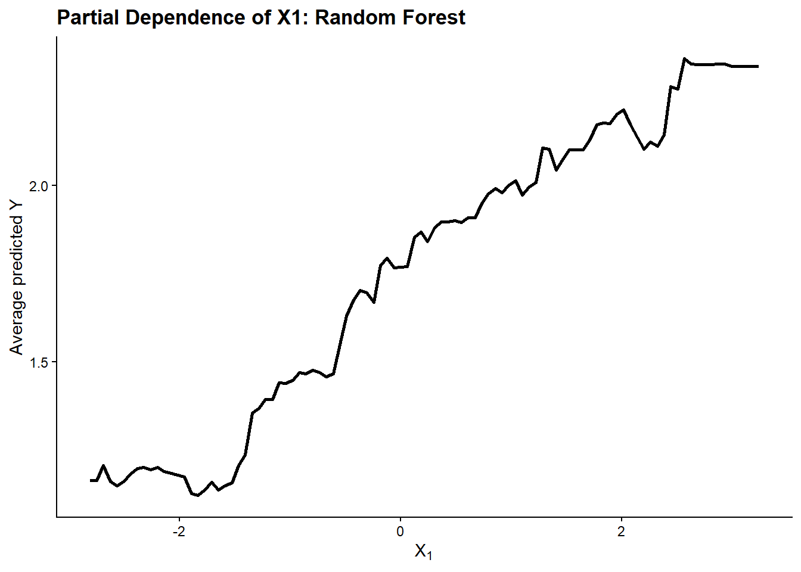
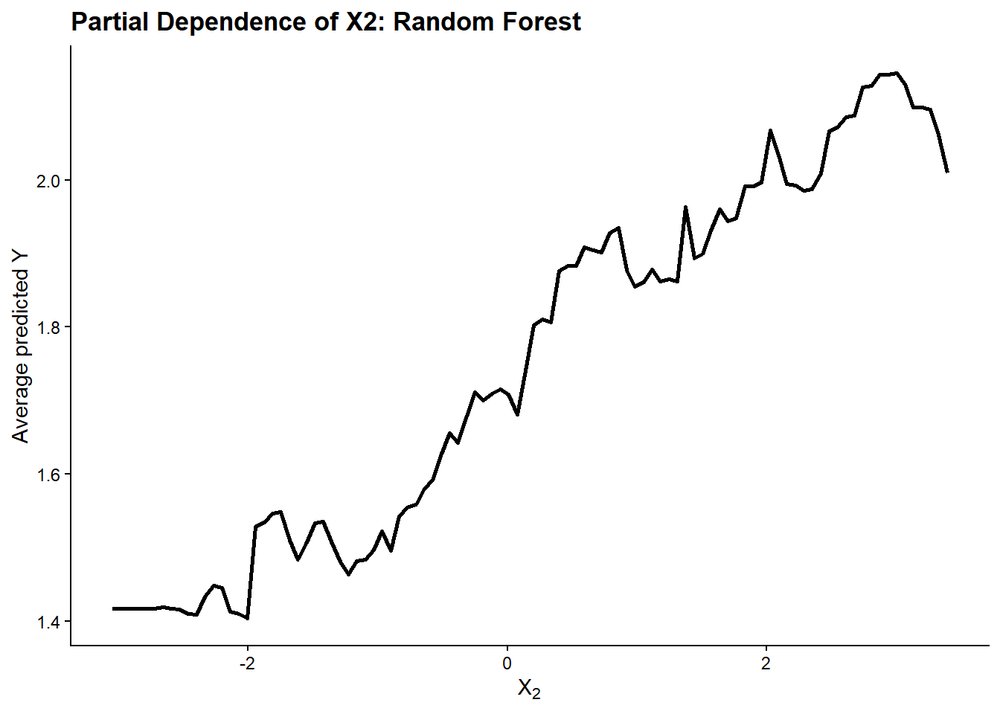
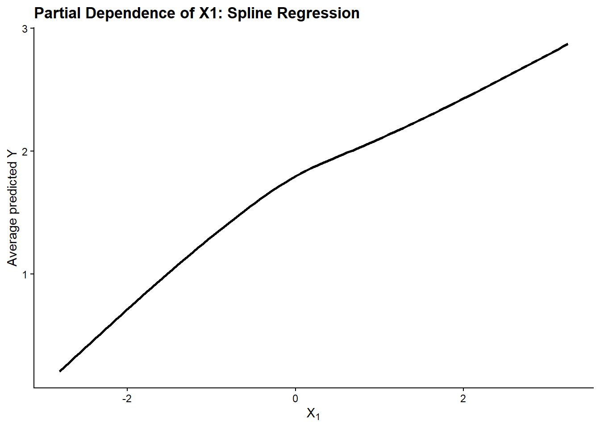
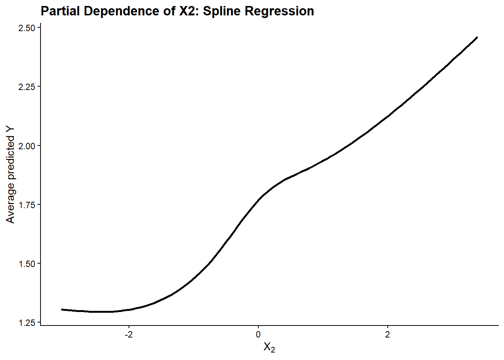

Show code
set.seed(123)
n <- 1000A partial dependence plot (PDP) is a model-interpretation tool that visualizes how predictions from a fitted model depend on one predictor, or a small subset of predictors, after averaging over the values of the remaining predictors.
The partial dependence function is defined by Hastie, Tibshirani, and Friedman (2009) as the marginal average of the fitted prediction function over the predictors that are not being examined. In practice, this allows a complex fitted model to be summarized by showing how its predictions change across values of a selected predictor.
Once a prediction model has identified which predictors are important, the next challenge is understanding how the model’s predictions depend on those predictors.
For models with only one or two predictors, the fitted relationship can often be visualized directly. However, when a model contains many predictors, its prediction function becomes high-dimensional and difficult to display or interpret.
Partial dependence provides a lower-dimensional summary of this complex prediction function. Instead of trying to visualize the model as a function of all predictors simultaneously, it focuses on one predictor, or a small subset of predictors, and shows how the model’s predictions change across their values while averaging over the remaining predictors.
This is especially useful for flexible or “black-box” prediction models, where the fitted relationship may be nonlinear or difficult to summarize using a single regression coefficient.
Suppose a fitted prediction model uses several predictors. To examine the partial dependence of the model on one predictor, the predictors can be separated into two groups:
The fitted prediction function can therefore be written as
\[ f(X) = f(X_S, X_C). \]
Partial dependence asks what the model predicts across different values of \(X_S\) after averaging over the distribution of the remaining predictors, \(X_C\).
Hastie, Tibshirani, and Friedman (2009) define the partial dependence of the fitted function on \(X_S\) as
\[ f_S(x_S) = E_{X_C} \left[ f(x_S, X_C) \right]. \]
The expectation \(E_{X_C}\) means that the model’s predictions are averaged over the distribution of the remaining predictors, \(X_C\). The result is a lower-dimensional function describing how the model’s predictions depend on \(X_S\).
In practice, the population distribution of the remaining predictors is unknown. Partial dependence is therefore estimated using the observed predictor values in the available dataset.
For a selected value of \(x_S\), the estimated partial dependence is
\[ \hat{f}_S(x_S) = \frac{1}{N} \sum_{i=1}^{N} \hat{f}(x_S, x_{iC}). \]
where \(N\) is the number of observations, \(x_S\) is the selected value of the predictor(s) of interest, and \(x_{iC}\) denotes the observed values of the remaining predictors for observation \(i\).
Suppose a fitted model predicts knee-extension strength using lower-limb lean soft tissue, age, BMI, and physical activity.
We want to understand how the model’s predictions depend on lower-limb lean soft tissue.
Consider three participants:
| Participant | Actual lean soft tissue | Age | BMI | Physical activity |
|---|---|---|---|---|
| A | 18 kg | 25 | 22 | High |
| B | 24 kg | 55 | 30 | Low |
| C | 30 kg | 38 | 25 | Moderate |
To estimate partial dependence at
\[ x_S = 20 \text{ kg}, \]
we temporarily set lean soft tissue to 20 kg for every participant while leaving all other predictor values unchanged:
| Participant | Lean soft tissue used for prediction | Age | BMI | Physical activity |
|---|---|---|---|---|
| A | 20 kg | 25 | 22 | High |
| B | 20 kg | 55 | 30 | Low |
| C | 20 kg | 38 | 25 | Moderate |
The fitted model is then used to predict knee-extension strength for each participant.
Suppose the predictions are:
\[ 120,\quad 160,\quad 140 \text{ Nm}. \]
The average prediction is therefore
\[ \frac{120 + 160 + 140}{3} = 140 \text{ Nm}. \]
This gives one point on the partial dependence curve:
\[ (20,\;140). \]
Repeating this procedure across the range of lean soft tissue values produces a series of average predictions that can be plotted as the partial dependence curve.
In practical terms, the calculation follows the same procedure at every value of the predictor of interest:
For a predictor of interest \(X_S\):
Choose a sequence of values across the observed range of \(X_S\).
Select one value, \(x_S\), and set the predictor to this value for every observation in the dataset.
Keep all remaining predictors, \(X_C\), at their original observed values.
Use the fitted model to generate a prediction for every observation.
Average those predictions to obtain the partial dependence estimate at \(x_S\).
Repeat the procedure for every selected value of \(X_S\).
Plot the values of \(X_S\) on the x-axis and the corresponding average predictions on the y-axis.
Set → Predict → Average → Repeat
Although partial dependence plots are useful for summarizing how a fitted model behaves, they should be interpreted carefully.
A PDP averages predictions across all observations. As a result, different patterns among individuals can be hidden by the average curve.
For example, the model may predict that increasing a predictor is associated with a strong increase in the outcome for some observations but little or no increase for others. The PDP may average these different patterns into a single moderate-looking relationship.
Individual conditional expectation (ICE) plots can help reveal this heterogeneity because they display a separate prediction curve for each observation rather than only the average curve. In fact, the PDP can be viewed as the average of the individual ICE curves.
I will now demonstrate how partial dependence plots can be used to interpret two different prediction models: a random forest and a linear regression model with splines. Both models will be fitted to the same simulated dataset so that their learned relationships can be compared.
The data are generated from the following model:
\[ E[Y \mid X] = \sqrt{5}\,\operatorname{sigmoid}(X_1 + X_3) + \sqrt{5}\,\operatorname{sigmoid}(X_2)X_3, \]
with
\[ V[Y \mid X] = 1, \]
where
\[ X_1, X_2 \sim N(0,1), \]
\[ X_3 \sim \operatorname{Bernoulli}(0.4), \]
and
\[ \operatorname{sigmoid}(x) = \frac{1}{1+e^{-x}}. \]
We generate the data one component at a time below.
A random seed is set so that the same simulated dataset is produced each time the chapter is rendered. We use a sample size of 1,000 observations for the demonstration.
set.seed(123)
n <- 1000The model contains three predictors. \(X_1\) and \(X_2\) are continuous variables generated from standard normal distributions. Therefore, both have a mean of 0 and a standard deviation of 1.
\(X_3\) is binary and follows a Bernoulli distribution with probability 0.4. This means that approximately 40% of observations are expected to have \(X_3 = 1\), while approximately 60% have \(X_3 = 0\).
x1 <- rnorm(n, mean = 0, sd = 1)
x2 <- rnorm(n, mean = 0, sd = 1)
x3 <- rbinom(n, size = 1, prob = 0.4)The data-generating model uses the sigmoid function
\[ \operatorname{sigmoid}(x) = \frac{1}{1+e^{-x}}. \]
The sigmoid transformation maps any input value to a value between 0 and 1 and produces an S-shaped nonlinear relationship.
sigmoid <- function(x) {
1 / (1 + exp(-x))
}For every observation, we calculate the expected value of \(Y\) using the data-generating equation:
\[ E[Y \mid X] = \sqrt{5}\,\operatorname{sigmoid}(X_1 + X_3) + \sqrt{5}\,\operatorname{sigmoid}(X_2)X_3. \]
We store this quantity as mu. It represents the true conditional mean of the outcome specified by the data-generating process before random noise is added.
mu <- sqrt(5) * sigmoid(x1 + x3) +
sqrt(5) * sigmoid(x2) * x3An important feature of this model is that the contribution of \(X_2\) depends on \(X_3\).
When \(X_3 = 0\), the second term becomes zero:
\[ \sqrt{5}\,\operatorname{sigmoid}(X_2)(0) = 0. \]
Therefore, \(X_2\) does not contribute to the expected outcome when \(X_3 = 0\).
When \(X_3 = 1\), the second term becomes
\[ \sqrt{5}\,\operatorname{sigmoid}(X_2), \]
so \(X_2\) does contribute to the expected outcome.
Thus, the data-generating process contains an interaction between \(X_2\) and \(X_3\): the relationship between \(X_2\) and the outcome depends on the value of \(X_3\).
\(X_3\) also affects the relationship between \(X_1\) and the outcome because it appears inside \(\operatorname{sigmoid}(X_1 + X_3)\). When \(X_3 = 1\), the sigmoid function is evaluated at \(X_1 + 1\) rather than \(X_1\), shifting the relationship between \(X_1\) and the expected outcome.
The assignment specifies
\[ V[Y \mid X] = 1. \]
To generate observed outcome values, we add random error with mean 0 and variance 1 to the conditional mean. For this demonstration, we use normally distributed error:
\[ Y = E[Y \mid X] + \varepsilon, \]
where
\[ \varepsilon \sim N(0,1). \]
This preserves the specified conditional variance of 1.
y <- mu + rnorm(n, mean = 0, sd = 1)Finally, the outcome and predictors are combined into a single data frame that will be used to fit both prediction models.
dat <- data.frame(
y = y,
x1 = x1,
x2 = x2,
x3 = x3
)
head(dat) y x1 x2 x3
1 0.1338631 -0.56047565 -0.99579872 0
2 2.6865946 -0.23017749 -1.03995504 1
3 1.1428531 1.55870831 -0.01798024 0
4 2.1754546 0.07050839 -0.13217513 1
5 1.9645921 0.12928774 -2.54934277 0
6 1.4194285 1.71506499 1.04057346 0The resulting dataset contains one outcome, y, and three predictors, x1, x2, and x3. Because the data were simulated, the underlying relationship between the predictors and the expected outcome is known. This allows us to evaluate how well the random forest and spline regression models recover that relationship and how effectively partial dependence plots summarize what each fitted model has learned.
We now fit two prediction models to the simulated data: a random forest and a linear regression model with splines.
A random forest is an ensemble learning method that combines predictions from many decision trees. Each tree is fitted using a different bootstrap sample of the data and considers a random subset of predictors when making splits.
For a regression problem, each tree produces a predicted value of the outcome, and the random forest prediction is obtained by averaging the predictions across all trees.
This flexibility allows a random forest to learn nonlinear relationships and interactions without requiring their exact form to be specified in advance.
library(randomForest)
set.seed(123)
rf_fit <- randomForest(
y ~ x1 + x2 + x3,
data = dat,
ntree = 500
)
rf_summary <- data.frame(
Metric = c(
"Model type",
"Number of trees",
"Variables tried at each split",
"Out-of-bag mean squared error",
"Variance explained"
),
Value = c(
"Regression",
rf_fit$ntree,
rf_fit$mtry,
round(rf_fit$mse[rf_fit$ntree], 3),
paste0(round(100 * rf_fit$rsq[rf_fit$ntree], 1), "%")
)
)
knitr::kable(
rf_summary,
caption = "Random forest model summary"
)| Metric | Value |
|---|---|
| Model type | Regression |
| Number of trees | 500 |
| Variables tried at each split | 1 |
| Out-of-bag mean squared error | 1.048 |
| Variance explained | 38.1% |
The model uses y as the outcome and x1, x2, and x3 as predictors. A total of 500 regression trees are fitted, and their predictions are averaged to produce the final random forest prediction.
Importantly, the random forest is not given the true data-generating equation. It must learn the nonlinear relationships and interactions from the simulated observations themselves.
The model summary provides the out-of-bag prediction error and the proportion of variation explained.
A simple linear regression specification would restrict the relationships between the predictors and the expected outcome to straight lines. However, the true data-generating process in this simulation contains nonlinear sigmoid relationships.
Splines allow a regression model to represent smooth nonlinear relationships by expressing a predictor using several basis functions rather than forcing the relationship to follow a single straight line.
Because the relationship between the predictors and the outcome also depends on \(X_3\), the spline model includes interactions with \(X_3\) so that the shape of the relationship can differ according to whether \(X_3 = 0\) or \(X_3 = 1\).
library(splines)
spline_fit <- lm(
y ~ ns(x1, df = 4) * x3 +
ns(x2, df = 4) * x3,
data = dat
)
spline_summary <- summary(spline_fit)
spline_table <- data.frame(
Metric = c(
"Model type",
"Number of observations",
"Residual standard error",
"R-squared",
"Adjusted R-squared"
),
Value = c(
"Linear regression with natural splines",
nobs(spline_fit),
round(spline_summary$sigma, 3),
round(spline_summary$r.squared, 3),
round(spline_summary$adj.r.squared, 3)
)
)
knitr::kable(
spline_table,
caption = "Spline regression model summary"
)| Metric | Value |
|---|---|
| Model type | Linear regression with natural splines |
| Number of observations | 1000 |
| Residual standard error | 0.999 |
| R-squared | 0.422 |
| Adjusted R-squared | 0.412 |
Four degrees of freedom are used here as a moderate-flexibility choice for representing the smooth nonlinear relationships in the simulated data.
The terms ns(x1, df = 4) and ns(x2, df = 4) allow \(X_1\) and \(X_2\) to have smooth nonlinear relationships with the outcome rather than restricting them to straight-line effects.
The interaction terms with \(X_3\) allow those nonlinear relationships to differ depending on whether \(X_3 = 0\) or \(X_3 = 1\). This is important because the true data-generating process was constructed so that the contribution of \(X_2\), and the relationship involving \(X_1\), depend on the value of \(X_3\).
The two fitted models can now be interpreted using partial dependence plots.
Partial dependence plots are now constructed from the fitted models using the same set → predict → average → repeat procedure described earlier. We begin by examining the partial dependence of the random forest predictions on \(X_1\).
First, we create a sequence of values spanning the observed range of \(X_1\).
x1_grid <- seq(
min(dat$x1),
max(dat$x1),
length.out = 100
)For each value in this sequence, \(X_1\) is temporarily set to that value for every observation in the dataset. The random forest then predicts the outcome for all observations, and those predictions are averaged.
rf_pdp_x1 <- sapply(x1_grid, function(x1_value) {
new_dat <- dat
new_dat$x1 <- x1_value
predictions <- predict(
rf_fit,
newdata = new_dat
)
mean(predictions)
})The resulting predictor values and average predictions are combined into a data frame for plotting.
rf_pdp_x1_df <- data.frame(
x1 = x1_grid,
partial_dependence = rf_pdp_x1
)
head(rf_pdp_x1_df) x1 partial_dependence
1 -2.809775 1.162193
2 -2.748655 1.162193
3 -2.687536 1.205621
4 -2.626417 1.158731
5 -2.565297 1.146642
6 -2.504178 1.159148Finally, we plot the average random forest prediction against the values of \(X_1\).
library(ggplot2)
ggplot(
rf_pdp_x1_df,
aes(x = x1, y = partial_dependence)
) +
geom_line(linewidth = 1) +
labs(
title = "Partial Dependence of X1: Random Forest",
x = expression(X[1]),
y = "Average predicted Y"
) +
theme_classic() +
theme(
plot.title = element_text(face = "bold", size = 13)
)
The partial dependence plot shows that the random forest predicts a generally increasing relationship between \(X_1\) and the outcome. The relationship is nonlinear, with periods of relatively little change followed by steeper increases. This broadly reflects the nonlinear sigmoid relationship involving \(X_1\) in the data-generating process.
The same procedure can be used to examine the partial dependence of the random forest predictions on \(X_2\).
First, we create a sequence of values across the observed range of \(X_2\).
x2_grid <- seq(
min(dat$x2),
max(dat$x2),
length.out = 100
)For each value, \(X_2\) is temporarily set to that value for every observation while \(X_1\) and \(X_3\) remain at their observed values. Predictions are then generated and averaged.
rf_pdp_x2 <- sapply(x2_grid, function(x2_value) {
new_dat <- dat
new_dat$x2 <- x2_value
predictions <- predict(
rf_fit,
newdata = new_dat
)
mean(predictions)
})The resulting values are combined into a data frame.
rf_pdp_x2_df <- data.frame(
x2 = x2_grid,
partial_dependence = rf_pdp_x2
)
head(rf_pdp_x2_df) x2 partial_dependence
1 -3.047861 1.416871
2 -2.982828 1.416871
3 -2.917796 1.416871
4 -2.852763 1.416871
5 -2.787730 1.416871
6 -2.722698 1.416871Finally, the partial dependence values are plotted.
ggplot(
rf_pdp_x2_df,
aes(x = x2, y = partial_dependence)
) +
geom_line(linewidth = 1) +
labs(
title = "Partial Dependence of X2: Random Forest",
x = expression(X[2]),
y = "Average predicted Y"
) +
theme_classic() +
theme(
plot.title = element_text(face = "bold", size = 13)
)
The partial dependence plot shows that the random forest predicts a generally increasing relationship between \(X_2\) and the outcome. This is consistent with the data-generating process, in which \(X_2\) contributes positively when \(X_3 = 1\).
However, \(X_2\) has no contribution when \(X_3 = 0\). Because the PDP averages predictions across all observations, the plotted relationship represents an average of these different patterns. This illustrates how partial dependence can summarize an overall effect while potentially masking interaction-driven heterogeneity.
We now repeat the same partial dependence procedure using the fitted spline regression model.
The same sequence of \(X_1\) values used for the random forest is used here so that the two fitted models can later be compared over the same range.
spline_pdp_x1 <- sapply(x1_grid, function(x1_value) {
new_dat <- dat
new_dat$x1 <- x1_value
predictions <- predict(
spline_fit,
newdata = new_dat
)
mean(predictions)
})The predictor values and corresponding average predictions are combined into a data frame.
spline_pdp_x1_df <- data.frame(
x1 = x1_grid,
partial_dependence = spline_pdp_x1
)
head(spline_pdp_x1_df) x1 partial_dependence
1 -2.809775 0.2053674
2 -2.748655 0.2439686
3 -2.687536 0.2825593
4 -2.626417 0.3211289
5 -2.565297 0.3596668
6 -2.504178 0.3981625The partial dependence curve is then plotted.
ggplot(
spline_pdp_x1_df,
aes(x = x1, y = partial_dependence)
) +
geom_line(linewidth = 1) +
labs(
title = "Partial Dependence of X1: Spline Regression",
x = expression(X[1]),
y = "Average predicted Y"
) +
theme_classic() +
theme(
plot.title = element_text(face = "bold", size = 13)
)
The spline regression PDP shows a smooth increasing relationship between \(X_1\) and the average predicted outcome. This is broadly consistent with the nonlinear relationship involving \(X_1\) in the data-generating process. Compared with the random forest PDP, the spline curve is considerably smoother because the spline model represents the relationship using smooth basis functions rather than decision-tree splits.
The partial dependence of the spline regression model on \(X_2\) is estimated using the same procedure.
spline_pdp_x2 <- sapply(x2_grid, function(x2_value) {
new_dat <- dat
new_dat$x2 <- x2_value
predictions <- predict(
spline_fit,
newdata = new_dat
)
mean(predictions)
})The results are combined into a data frame.
spline_pdp_x2_df <- data.frame(
x2 = x2_grid,
partial_dependence = spline_pdp_x2
)
head(spline_pdp_x2_df) x2 partial_dependence
1 -3.047861 1.304284
2 -2.982828 1.302730
3 -2.917796 1.301211
4 -2.852763 1.299761
5 -2.787730 1.298415
6 -2.722698 1.297207The partial dependence curve is then plotted.
ggplot(
spline_pdp_x2_df,
aes(x = x2, y = partial_dependence)
) +
geom_line(linewidth = 1) +
labs(
title = "Partial Dependence of X2: Spline Regression",
x = expression(X[2]),
y = "Average predicted Y"
) +
theme_classic() +
theme(
plot.title = element_text(face = "bold", size = 13)
)
The spline regression PDP shows a smooth, nonlinear increase in the average predicted outcome as \(X_2\) increases. This is consistent with the sigmoid relationship involving \(X_2\) in the data-generating process.
However, the contribution of \(X_2\) depends on \(X_3\): \(X_2\) contributes to the outcome when \(X_3 = 1\) but not when \(X_3 = 0\). Because the PDP averages predictions across both groups, the curve represents the average relationship learned by the model and does not display this interaction separately.
Both models recover a generally increasing, nonlinear relationship between the predictors and the average predicted outcome. The random forest PDPs are more irregular because the model is constructed from decision-tree splits, whereas the spline regression produces smoother partial dependence curves by design.
Despite these differences in shape, the two approaches identify similar overall patterns for both \(X_1\) and \(X_2\). The \(X_2\) results also demonstrate an important limitation of partial dependence: because the effect of \(X_2\) depends on \(X_3\), averaging across all observations hides the different relationships present when \(X_3 = 0\) and \(X_3 = 1\).
Hastie, T., Tibshirani, R., & Friedman, J. (2009). The Elements of Statistical Learning: Data Mining, Inference, and Prediction (2nd ed.). Springer.
OpenAI ChatGPT (GPT-5.6 Sol) was used during the development of this tutorial to support conceptual understanding, assist with the structure and explanation of the partial dependence analysis, help develop and troubleshoot R/Quarto code, and provide feedback on clarity and wording. The final analysis, interpretation, code, and written content were reviewed and understood by the author.